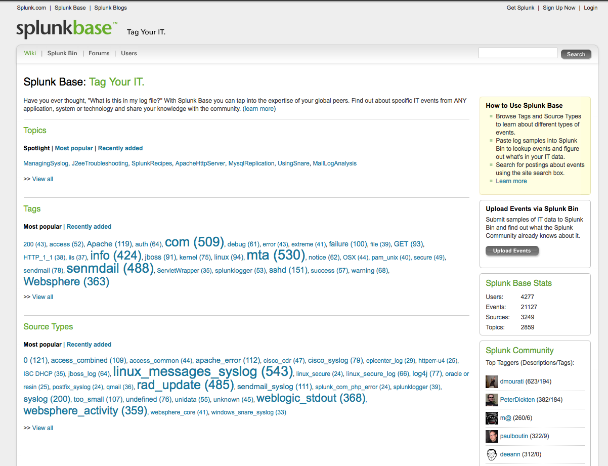
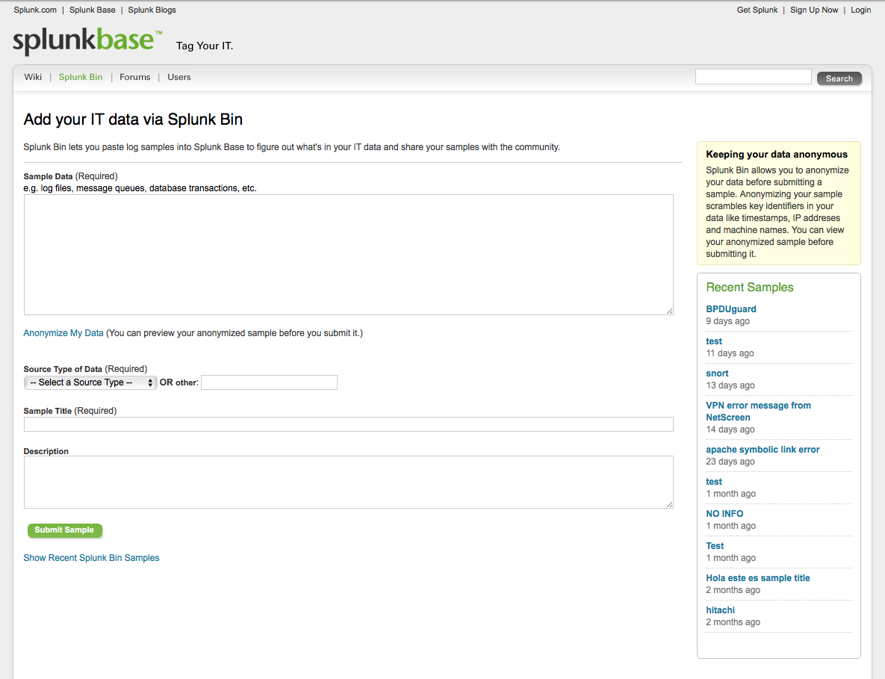
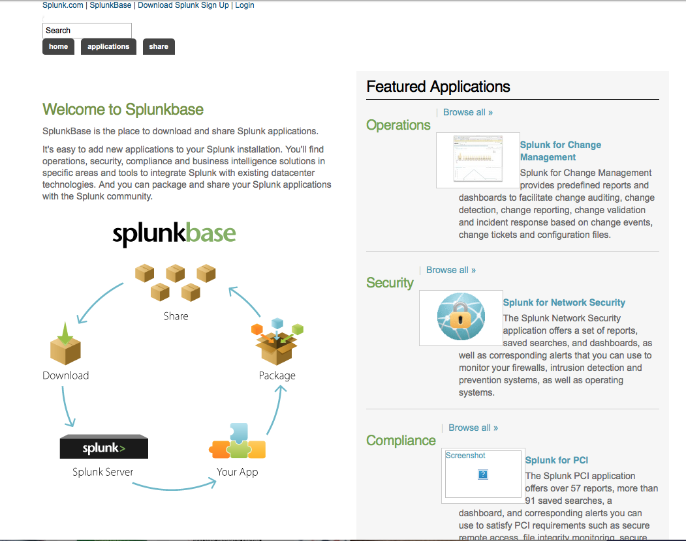
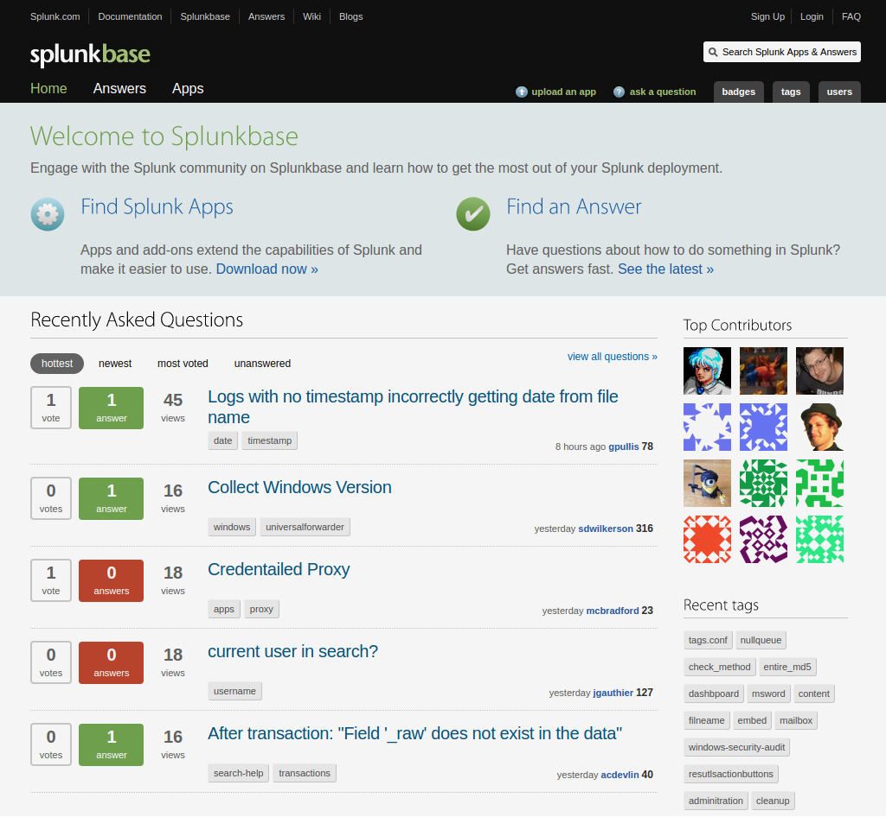
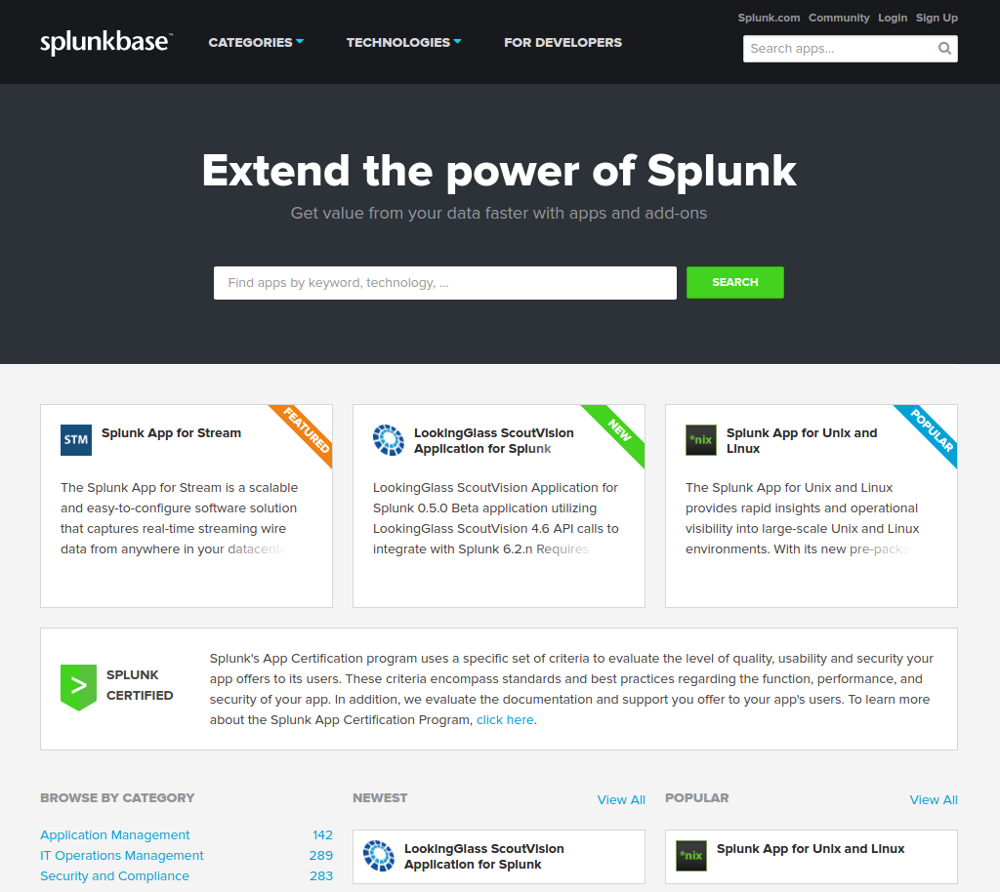
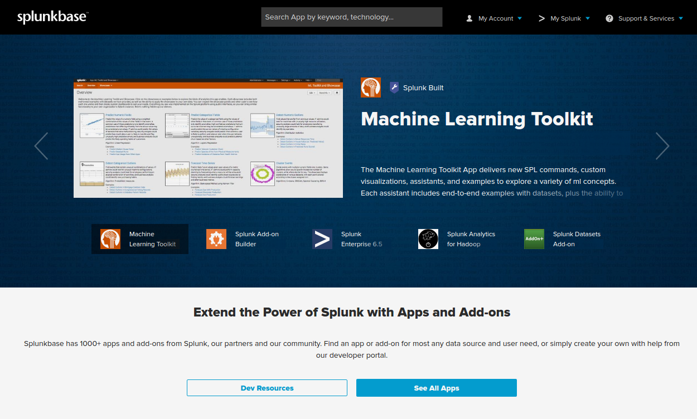

Past, present, and future.
Authored by Kellen GreenSplunkbase for the 2.x era
Still the most advanced idea we've done.
Within the product, you could "Search for this event on SplunkBase".
Goal was to become a repository of IT problem solving knowledge.
Users could upload anonymized eventtypes from within Splunk 2.x, tag and provide solutions on how to solve them.
Splunkbase for the 3.x era of Splunk.
Splunk 3.x brought "bundles" which became apps.
We incentivized content developers and built a taxonomy of everything (pre CIM).
Ran on PHP, MySQL, and a in-house web framework.
Shared an Apache process with splunk.com.
Fun fact, this code base is still powers newhire.splunk.com.
Site merged with Splunk>Answers.
Introduced a split domain hosting system.
"splunk-base" for Q&A and "splunkbase" for apps.
The Q&A site is managed by DZone, a 3rd party provider.
All PHP was dropped in favor of Python and Django.
Hosting moved to dedicated machines.
Laid ground work for future expansion.
Split Splunkbase into Splunk>Apps and Splunk>Answers.
Complete redesign for the Apps site.
Migrated all infrastructure to AWS.
Drastically improved search with Solr.
App packages served out of CloudFront CDN.
Moved to PostgreSQL.
Added Memcached.
App analytics added for developers.
Site redesign for the app certification project.
The Splunkbase branding was brought back.
Site redesign for the curated content project.
Added responsive design.
JSON API allows users to browse for apps within Splunk.
Documentation is available here.
Authenticates users for downloading apps directly within Splunk.
User credentials are NOT stored on Splunkbase.
The request is instead passed along to splunk.com for verification.
At login Splunk sends a list of installed apps to Splunkbase.
Splunkbase responds with a list of upgrade candidates.
The data included in this API call are later used for app analytics.
No ability for developers to monetize content.
Open infrastructure leads to security vulnerabilities.
Many apps are of poor quality.